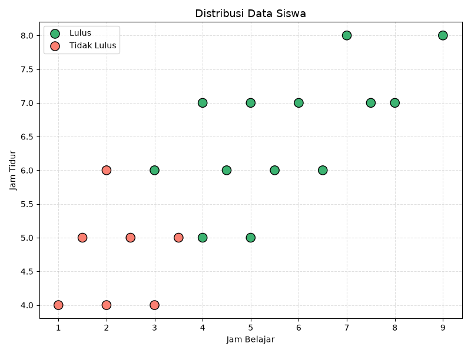
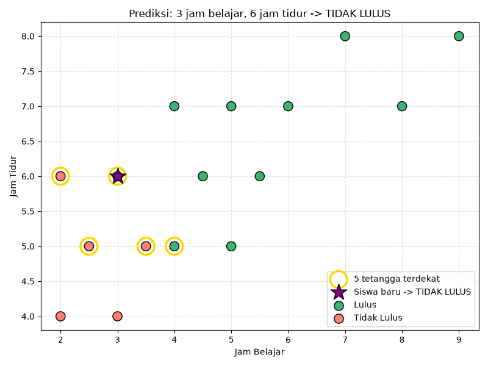

Implementasi model klasifikasi sederhana untuk memprediksi hasil ujian siswa berdasarkan kebiasaan belajar.
Cabang kecerdasan buatan yang memungkinkan komputer belajar dari data secara otomatis.
Aturan ditulis manual oleh programmer. Semakin kompleks masalah, semakin sulit dikelola.
Model menemukan pola sendiri dari data latih tanpa aturan eksplisit dari programmer.
Prediksi apakah siswa lulus atau tidak lulus berdasarkan jam belajar dan jam tidur.
Project ini menggunakan Supervised Learning — model dilatih menggunakan data yang sudah memiliki label (output yang diketahui).
20 data siswa dengan 2 fitur dan 1 label.
| No | Jam Belajar | Jam Tidur | Label |
|---|---|---|---|
| 1 | 1 jam | 4 jam | Tidak Lulus |
| 2 | 2 jam | 6 jam | Tidak Lulus |
| 3 | 3 jam | 6 jam | Lulus |
| 4 | 4 jam | 7 jam | Lulus |
| 5 | 5 jam | 5 jam | Lulus |
| ... 15 data lainnya | |||

Siswa dengan jam belajar rendah (<3 jam) dominan tidak lulus. Pola ini yang akan dipelajari oleh model KNN.
80% → training (16 data)
20% → testing (4 data)
Klasifikasi berdasarkan K data latih terdekat — kelas mayoritas dari tetangga terdekat menjadi hasil prediksi.
Hitung jarak antara data baru dengan seluruh data latih berdasarkan nilai fitur.
Ambil K data dengan jarak terkecil. Pada eksperimen ini K = 5.
Kelas yang paling banyak muncul di antara K tetangga menjadi label prediksi.

Akurasi 100% dicapai karena ukuran dataset yang kecil dan pola data yang relatif terpisah. Pada dataset yang lebih besar dan kompleks, akurasi sempurna hampir tidak mungkin terjadi. Nilai K juga berpengaruh signifikan — K terlalu kecil rentan overfitting, K terlalu besar bisa underfitting.
Machine Learning memungkinkan sistem untuk belajar dari data dan membuat keputusan tanpa diprogram secara eksplisit.